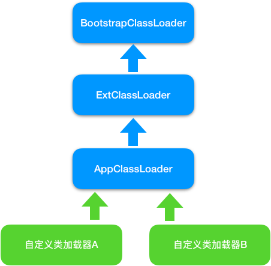

- 00 开篇词 Java程序员如何快速成长？.md.html
- 01 Web容器学习路径.md.html
- 02 HTTP协议必知必会.md.html
- 03 你应该知道的Servlet规范和Servlet容器.md.html
- 04 实战：纯手工打造和运行一个Servlet.md.html
- 05 Tomcat系统架构（上）： 连接器是如何设计的？.md.html
- 06 Tomcat系统架构（下）：聊聊多层容器的设计.md.html
- 07 Tomcat如何实现一键式启停？.md.html
- 08 Tomcat的“高层们”都负责做什么？.md.html
- 09 比较：Jetty架构特点之Connector组件.md.html
- 10 比较：Jetty架构特点之Handler组件.md.html
- 11 总结：从Tomcat和Jetty中提炼组件化设计规范.md.html
- 12 实战：优化并提高Tomcat启动速度.md.html
- 13 热点问题答疑（1）：如何学习源码？.md.html
- 14 NioEndpoint组件：Tomcat如何实现非阻塞I_O？.md.html
- 15 Nio2Endpoint组件：Tomcat如何实现异步I_O？.md.html
- 16 AprEndpoint组件：Tomcat APR提高I_O性能的秘密.md.html
- 17 Executor组件：Tomcat如何扩展Java线程池？.md.html
- 18 新特性：Tomcat如何支持WebSocket？.md.html
- 19 比较：Jetty的线程策略EatWhatYouKill.md.html
- 20 总结：Tomcat和Jetty中的对象池技术.md.html
- 21 总结：Tomcat和Jetty的高性能、高并发之道.md.html
- 22 热点问题答疑（2）：内核如何阻塞与唤醒进程？.md.html
- 23 Host容器：Tomcat如何实现热部署和热加载？.md.html
- 24 Context容器（上）：Tomcat如何打破双亲委托机制？.md.html
- 25 Context容器（中）：Tomcat如何隔离Web应用？.md.html
- 26 Context容器（下）：Tomcat如何实现Servlet规范？.md.html
- 27 新特性：Tomcat如何支持异步Servlet？.md.html
- 28 新特性：Spring Boot如何使用内嵌式的Tomcat和Jetty？.md.html
- 29 比较：Jetty如何实现具有上下文信息的责任链？.md.html
- 30 热点问题答疑（3）：Spring框架中的设计模式.md.html
- 31 Logger组件：Tomcat的日志框架及实战.md.html
- 32 Manager组件：Tomcat的Session管理机制解析.md.html
- 33 Cluster组件：Tomcat的集群通信原理.md.html
- 34 JVM GC原理及调优的基本思路.md.html
- 35 如何监控Tomcat的性能？.md.html
- 36 Tomcat I_O和线程池的并发调优.md.html
- 37 Tomcat内存溢出的原因分析及调优.md.html
- 38 Tomcat拒绝连接原因分析及网络优化.md.html
- 39 Tomcat进程占用CPU过高怎么办？.md.html
- 40 谈谈Jetty性能调优的思路.md.html
- 41 热点问题答疑（4）： Tomcat和Jetty有哪些不同？.md.html
- 特别放送 如何持续保持对学习的兴趣？.md.html
- 结束语 静下心来，品味经典.md.html
- 捐赠
24 Context容器（上）：Tomcat如何打破双亲委托机制？
相信我们平时在工作中都遇到过ClassNotFound异常，这个异常表示JVM在尝试加载某个类的时候失败了。想要解决这个问题，首先你需要知道什么是类加载，JVM是如何加载类的，以及为什么会出现ClassNotFound异常？弄懂上面这些问题之后，我们接着要思考Tomcat作为Web容器，它是如何加载和管理Web应用下的Servlet呢？
Tomcat正是通过Context组件来加载管理Web应用的，所以今天我会详细分析Tomcat的类加载机制。但在这之前，我们有必要预习一下JVM的类加载机制，我会先回答一下一开始抛出来的问题，接着再谈谈Tomcat的类加载器如何打破Java的双亲委托机制。
JVM的类加载器
Java的类加载，就是把字节码格式“.class”文件加载到JVM的方法区，并在JVM的堆区建立一个java.lang.Class对象的实例，用来封装Java类相关的数据和方法。那Class对象又是什么呢？你可以把它理解成业务类的模板，JVM根据这个模板来创建具体业务类对象实例。
JVM并不是在启动时就把所有的“.class”文件都加载一遍，而是程序在运行过程中用到了这个类才去加载。JVM类加载是由类加载器来完成的，JDK提供一个抽象类ClassLoader，这个抽象类中定义了三个关键方法，理解清楚它们的作用和关系非常重要。
public abstract class ClassLoader {
//每个类加载器都有个父加载器
private final ClassLoader parent;
public Class<?> loadClass(String name) {
//查找一下这个类是不是已经加载过了
Class<?> c = findLoadedClass(name);
//如果没有加载过
if( c == null ){
//先委托给父加载器去加载，注意这是个递归调用
if (parent != null) {
c = parent.loadClass(name);
}else {
// 如果父加载器为空，查找Bootstrap加载器是不是加载过了
c = findBootstrapClassOrNull(name);
}
}
// 如果父加载器没加载成功，调用自己的findClass去加载
if (c == null) {
c = findClass(name);
}
return c；
}
protected Class<?> findClass(String name){
//1. 根据传入的类名name，到在特定目录下去寻找类文件，把.class文件读入内存
...
//2. 调用defineClass将字节数组转成Class对象
return defineClass(buf, off, len)；
}
// 将字节码数组解析成一个Class对象，用native方法实现
protected final Class<?> defineClass(byte[] b, int off, int len){
...
}
}
从上面的代码我们可以得到几个关键信息：
- JVM的类加载器是分层次的，它们有父子关系，每个类加载器都持有一个parent字段，指向父加载器。
- defineClass是个工具方法，它的职责是调用native方法把Java类的字节码解析成一个Class对象，所谓的native方法就是由C语言实现的方法，Java通过JNI机制调用。
- findClass方法的主要职责就是找到“.class”文件，可能来自文件系统或者网络，找到后把“.class”文件读到内存得到字节码数组，然后调用defineClass方法得到Class对象。
- loadClass是个public方法，说明它才是对外提供服务的接口，具体实现也比较清晰：首先检查这个类是不是已经被加载过了，如果加载过了直接返回，否则交给父加载器去加载。请你注意，这是一个递归调用，也就是说子加载器持有父加载器的引用，当一个类加载器需要加载一个Java类时，会先委托父加载器去加载，然后父加载器在自己的加载路径中搜索Java类，当父加载器在自己的加载范围内找不到时，才会交还给子加载器加载，这就是双亲委托机制。
JDK中有哪些默认的类加载器？它们的本质区别是什么？为什么需要双亲委托机制？JDK中有3个类加载器，另外你也可以自定义类加载器，它们的关系如下图所示。

- BootstrapClassLoader是启动类加载器，由C语言实现，用来加载JVM启动时所需要的核心类，比如
rt.jar、resources.jar等。 - ExtClassLoader是扩展类加载器，用来加载
\jre\lib\ext目录下JAR包。 - AppClassLoader是系统类加载器，用来加载classpath下的类，应用程序默认用它来加载类。
- 自定义类加载器，用来加载自定义路径下的类。
这些类加载器的工作原理是一样的，区别是它们的加载路径不同，也就是说findClass这个方法查找的路径不同。双亲委托机制是为了保证一个Java类在JVM中是唯一的，假如你不小心写了一个与JRE核心类同名的类，比如Object类，双亲委托机制能保证加载的是JRE里的那个Object类，而不是你写的Object类。这是因为AppClassLoader在加载你的Object类时，会委托给ExtClassLoader去加载，而ExtClassLoader又会委托给BootstrapClassLoader，BootstrapClassLoader发现自己已经加载过了Object类，会直接返回，不会去加载你写的Object类。
这里请你注意，类加载器的父子关系不是通过继承来实现的，比如AppClassLoader并不是ExtClassLoader的子类，而是说AppClassLoader的parent成员变量指向ExtClassLoader对象。同样的道理，如果你要自定义类加载器，不去继承AppClassLoader，而是继承ClassLoader抽象类，再重写findClass和loadClass方法即可，Tomcat就是通过自定义类加载器来实现自己的类加载逻辑。不知道你发现没有，如果你要打破双亲委托机制，就需要重写loadClass方法，因为loadClass的默认实现就是双亲委托机制。
Tomcat的类加载器
Tomcat的自定义类加载器WebAppClassLoader打破了双亲委托机制，它首先自己尝试去加载某个类，如果找不到再代理给父类加载器，其目的是优先加载Web应用自己定义的类。具体实现就是重写ClassLoader的两个方法：findClass和loadClass。
findClass方法
我们先来看看findClass方法的实现，为了方便理解和阅读，我去掉了一些细节：
public Class<?> findClass(String name) throws ClassNotFoundException {
...
Class<?> clazz = null;
try {
//1. 先在Web应用目录下查找类
clazz = findClassInternal(name);
} catch (RuntimeException e) {
throw e;
}
if (clazz == null) {
try {
//2. 如果在本地目录没有找到，交给父加载器去查找
clazz = super.findClass(name);
} catch (RuntimeException e) {
throw e;
}
//3. 如果父类也没找到，抛出ClassNotFoundException
if (clazz == null) {
throw new ClassNotFoundException(name);
}
return clazz;
}
在findClass方法里，主要有三个步骤：
- 先在Web应用本地目录下查找要加载的类。
- 如果没有找到，交给父加载器去查找，它的父加载器就是上面提到的系统类加载器AppClassLoader。
- 如何父加载器也没找到这个类，抛出ClassNotFound异常。
loadClass方法
接着我们再来看Tomcat类加载器的loadClass方法的实现，同样我也去掉了一些细节：
public Class<?> loadClass(String name, boolean resolve) throws ClassNotFoundException {
synchronized (getClassLoadingLock(name)) {
Class<?> clazz = null;
//1. 先在本地cache查找该类是否已经加载过
clazz = findLoadedClass0(name);
if (clazz != null) {
if (resolve)
resolveClass(clazz);
return clazz;
}
//2. 从系统类加载器的cache中查找是否加载过
clazz = findLoadedClass(name);
if (clazz != null) {
if (resolve)
resolveClass(clazz);
return clazz;
}
// 3. 尝试用ExtClassLoader类加载器类加载，为什么？
ClassLoader javaseLoader = getJavaseClassLoader();
try {
clazz = javaseLoader.loadClass(name);
if (clazz != null) {
if (resolve)
resolveClass(clazz);
return clazz;
}
} catch (ClassNotFoundException e) {
// Ignore
}
// 4. 尝试在本地目录搜索class并加载
try {
clazz = findClass(name);
if (clazz != null) {
if (resolve)
resolveClass(clazz);
return clazz;
}
} catch (ClassNotFoundException e) {
// Ignore
}
// 5. 尝试用系统类加载器(也就是AppClassLoader)来加载
try {
clazz = Class.forName(name, false, parent);
if (clazz != null) {
if (resolve)
resolveClass(clazz);
return clazz;
}
} catch (ClassNotFoundException e) {
// Ignore
}
}
//6. 上述过程都加载失败，抛出异常
throw new ClassNotFoundException(name);
}
loadClass方法稍微复杂一点，主要有六个步骤：
- 先在本地Cache查找该类是否已经加载过，也就是说Tomcat的类加载器是否已经加载过这个类。
- 如果Tomcat类加载器没有加载过这个类，再看看系统类加载器是否加载过。
- 如果都没有，就让ExtClassLoader去加载，这一步比较关键，目的防止Web应用自己的类覆盖JRE的核心类。因为Tomcat需要打破双亲委托机制，假如Web应用里自定义了一个叫Object的类，如果先加载这个Object类，就会覆盖JRE里面的那个Object类，这就是为什么Tomcat的类加载器会优先尝试用ExtClassLoader去加载，因为ExtClassLoader会委托给BootstrapClassLoader去加载，BootstrapClassLoader发现自己已经加载了Object类，直接返回给Tomcat的类加载器，这样Tomcat的类加载器就不会去加载Web应用下的Object类了，也就避免了覆盖JRE核心类的问题。
- 如果ExtClassLoader加载器加载失败，也就是说JRE核心类中没有这类，那么就在本地Web应用目录下查找并加载。
- 如果本地目录下没有这个类，说明不是Web应用自己定义的类，那么由系统类加载器去加载。这里请你注意，Web应用是通过
Class.forName调用交给系统类加载器的，因为Class.forName的默认加载器就是系统类加载器。 - 如果上述加载过程全部失败，抛出ClassNotFound异常。
从上面的过程我们可以看到，Tomcat的类加载器打破了双亲委托机制，没有一上来就直接委托给父加载器，而是先在本地目录下加载，为了避免本地目录下的类覆盖JRE的核心类，先尝试用JVM扩展类加载器ExtClassLoader去加载。那为什么不先用系统类加载器AppClassLoader去加载？很显然，如果是这样的话，那就变成双亲委托机制了，这就是Tomcat类加载器的巧妙之处。
本期精华
今天我介绍了JVM的类加载器原理和源码剖析，以及Tomcat的类加载器是如何打破双亲委托机制的，目的是为了优先加载Web应用目录下的类，然后再加载其他目录下的类，这也是Servlet规范的推荐做法。
要打破双亲委托机制，需要继承ClassLoader抽象类，并且需要重写它的loadClass方法，因为ClassLoader的默认实现就是双亲委托。
课后思考
如果你并不想打破双亲委托机制，但是又想定义自己的类加载器来加载特定目录下的类，你需要重写findClass和loadClass方法中的哪一个？还是两个都要重写？
不知道今天的内容你消化得如何？如果还有疑问，请大胆的在留言区提问，也欢迎你把你的课后思考和心得记录下来，与我和其他同学一起讨论。如果你觉得今天有所收获，欢迎你把它分享给你的朋友。
© 2019 - 2023 Liangliang Lee. Powered by gin and hexo-theme-book.